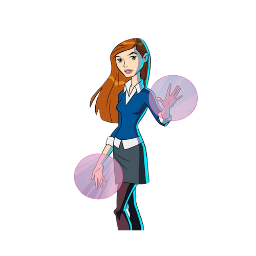
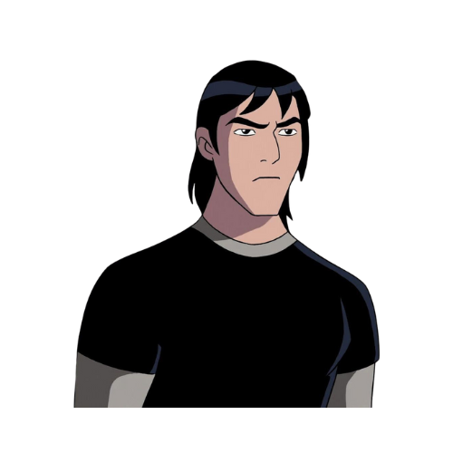
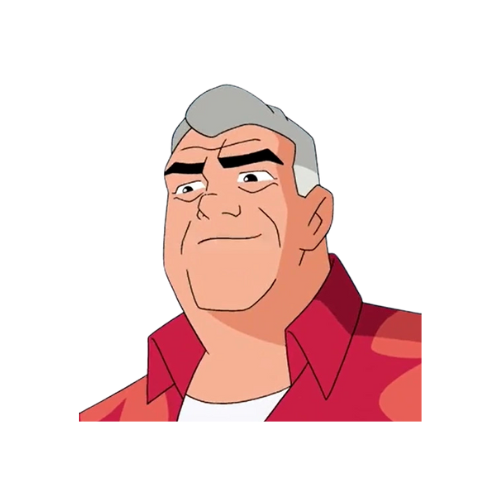
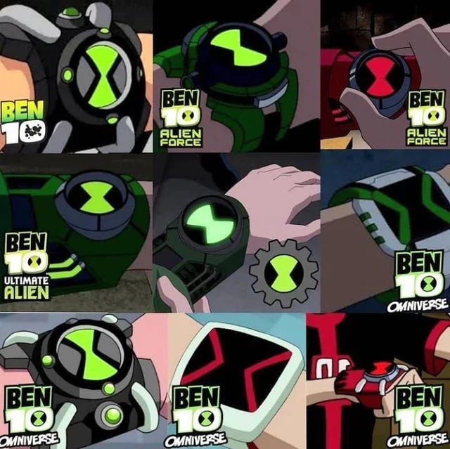
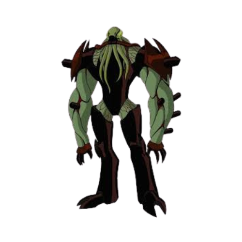
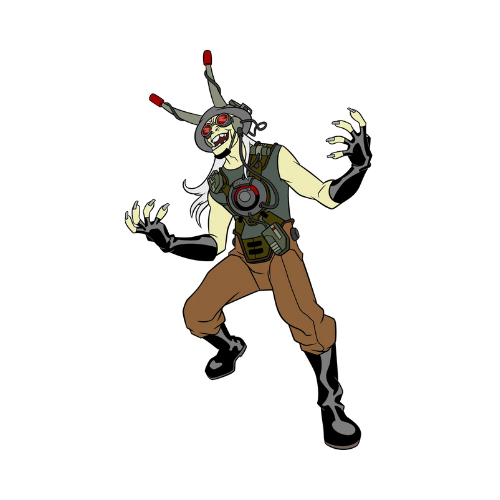
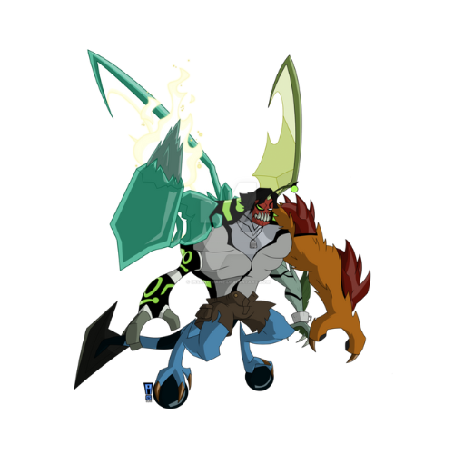

Bem-vindo ao Universo Ben 10
Explore o incrível mundo de Ben Tennyson, um herói que, com o poder do Omnitrix, pode se transformar em vários alienígenas para salvar o mundo!
O Herói - Ben Tennyson
Com o Omnitrix, Ben Tennyson ganha incríveis poderes e se transforma em diferentes alienígenas para enfrentar vilões ameaçadores.
Ben Tennyson
Personagens Principais
- Ben Tennyson
- Gwen Tennyson 
- Kevin 
- Vovô Max 
O Omnitrix
O Omnitrix é o dispositivo alienígena que permite a Ben se transformar e enfrentar inimigos com habilidades únicas.
Alienígenas
Vilões e Ameaças
Descubra os principais vilões e ameaças que Ben Tennyson enfrenta em sua jornada épica.
- Vilgax 
- Dr. Animo 
- Kevin Levin 
Curiosidades
Ben 10 é uma das franquias de animação mais icônicas, criada por Duncan Rouleau, Joe Kelly, Joe Casey e Steven T. Seagle. A série estreou no Cartoon Network em 2005 e rapidamente conquistou uma base de fãs global. Ela segue as aventuras de Ben Tennyson, um garoto que encontra o Omnitrix, um dispositivo alienígena que lhe permite se transformar em diferentes seres com poderes extraordinários, enfrentando vilões e protegendo o mundo.

Avaliação
Ben 10 foi altamente elogiado por sua criatividade e pela maneira como introduziu conceitos de ficção científica e ação para um público jovem. A série não só inovou com o design dos alienígenas e as transformações, mas também foi pioneira ao abordar temas de responsabilidade, amizade e coragem. A franquia se expandiu para várias temporadas, filmes, quadrinhos e videogames, tornando-se um marco cultural da década de 2000.
Avaliações:
- IMDb: 7,5 ★★★★★
- AdoroCinema: 3,8 ★★★★☆
Essas avaliações indicam uma recepção positiva, mas com algumas críticas sobre as temporadas subsequentes.
Impacto Cultural
Com mais de 15 anos de sucesso, Ben 10 continua a ser relevante, com uma nova geração de fãs, graças à expansão de seu universo em novas séries como Ben 10 (2016) e jogos eletrônicos. Além de ser um grande sucesso de merchandising, a série provoca reflexões sobre o uso responsável de poderes e como as escolhas impactam o mundo ao nosso redor.
Criadores de Ben 10
Ben 10 foi criado por Duncan Rouleau, Joe Kelly, Joe Casey e Steven T. Seagle como parte da equipe de desenvolvimento da Man of Action Studios. A série foi produzida pelo Cartoon Network Studios.
📷 Criadores: Duncan Rouleau, Joe Kelly, Joe Casey, Steven T. Seagle
🎬 Produção: Cartoon Network Studios
🌍 Distribuição: Cartoon Network
📅 Estreia: 2005